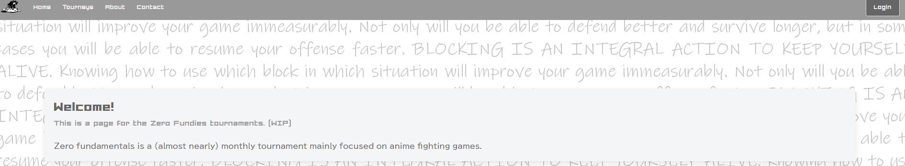
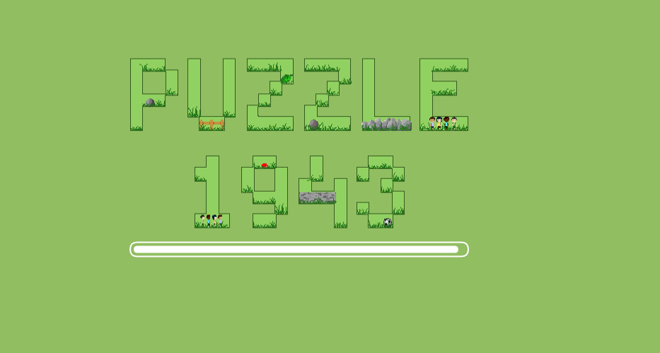

About me:
My name is Terencio Evora Goncalves. I'm a software engineer currently studying at Hogeschool Rotterdam. I've been programming for 6 years now, and I'll always love it. This site is always being worked on with new ideas. Thank you for visiting!
Skills:
I'm quite experienced with Javascript and PHP. I've been working as a part-timer for an it company for 3 years now.
HTML
CSS
JavaScript
PHP
Projects
The wheelerbot
For the first period of school, we had to create a smart device that would help in daily life. We created the wheelerbot to help fight the war against egotistical cyclers.
I specifically helped in programming the mechanism of it going up and down after a button is pressed. I also designed the board with multiple symbols on it, kindly telling cyclers to bugger off.
My bike was also used for the prototype. We applied the custom made board on it, and tested it outside too.
Under this text is a presentation of the wheelerbot. Sadly, it's in Dutch and also flipped on it's side. My excuses for the inconvience.
Zero Fundamentals Website
Visit the Zero Fundies website. For the second period of school, I worked with the Dutch FGC group Zero Fundamentals to create a website for them that allows players to register themselves for a tournament. This was my first time fully working alone on a big project such as this
The website works as a place where players can sign up for upcoming tournaments. They can check which tournaments they're signed up for.
Administrators can check which players are signed up, create new tournaments, and also delete players from tournaments.
All in all, the project was a big success, and the website was recently used while running tournaments.
BegrijpBaar

For the third period of school, I worked together with a group to create BegrijpBaar, a website that helps people with an auditory defection to still enjoy a day out. Whether it be museums or amusement parks.
I created the page made for administrators where they can add their own activity and use it to show it to give additional information about specific places within their activity.
There is also a live notification system that sends messages to said activity. This is then shown to every user on that page.
Puzzle 1943
Play Puzzle 1943 now For the final period of my first year I had to create a game with a group. We got 3 requirements that we had to fullfill, it had to be an exploration game, made for 2 players, and based off of park 1943.
Thus, we created Puzzle 1943, after some brainstorming. A multiplayer puzzle game made for browsers, where you have to explore 3 levels and find all the secrets.
I created the player movement, character select and the camera, specifically.
The camera I made is a custom camera that calculates the distance between the two players, and zooms out based on a equation.
I was also the lead programmer and project leader, leading the brainstorming sessions and keeping track of everyone's work, as well as helping everyone out when needed.